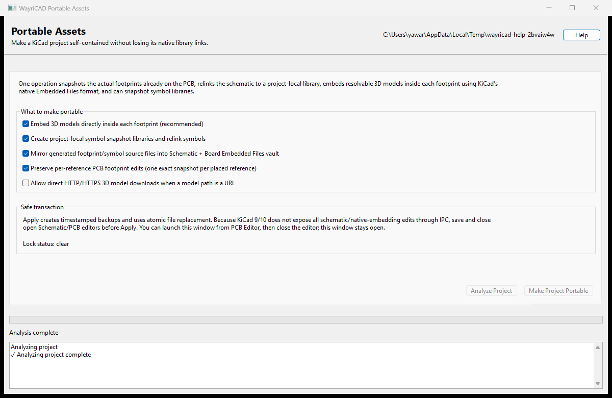

Build a transferable project-local snapshot from the geometry and cached symbols already stored in a KiCad 10 project.

| Output | Purpose |
|---|---|
.portable_assets/Portable.pretty | Exact placed-footprint snapshots, optionally one per reference. |
.portable_assets/symbols | Project-local symbol snapshots reconstructed from schematic caches. |
.portable_assets/manifest.json | Reference mapping and unresolved-model audit. |
| Embedded Files vault | Optional recovery copy of generated footprint and symbol source files. |
Repair Missing Footprints can recover a missing schematic footprint link only when that reference has a full placed footprint in the PCB. Restore from Embedded Vault recreates generated local-library files from the native KiCad vault. Both operations check locks, ask for confirmation, and create backups.
| Symptom | Resolution |
|---|---|
| Apply says preview is stale | Files or options changed. Analyze again and review the new result. |
| Lock files detected | Save and close PCB/Schematic Editor. Do not delete a legitimate lock to bypass this safeguard. |
| Model remains unresolved | Add a project/local search location or explicitly enable trusted URL retrieval. Existing links are left unchanged. |
| Unplaced footprint cannot be recovered | The PCB has no authoritative geometry snapshot; restore the original library or use another known-good source. |
This targets modern KiCad 9/10 S-expression projects and is packaged for KiCad 10 IPC. It does not replace ERC, DRC, library review, 3D inspection, or a clean-machine transfer test.